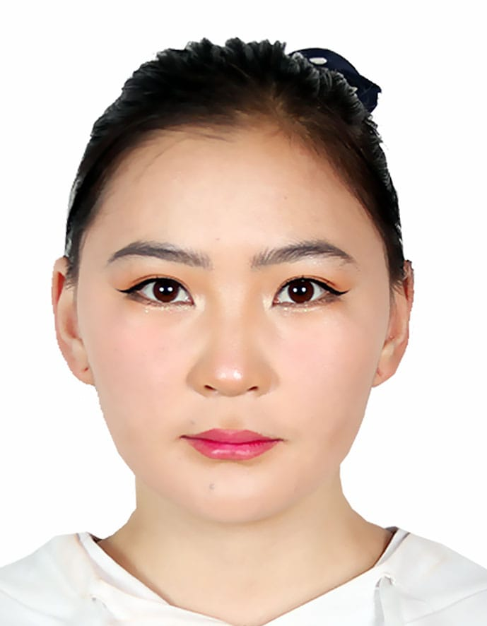

Hello! I’m Bayarmaa Bumandorj, a passionate Computer Science and Engineering student from Lovely Professional University. I enjoy creating automation solutions, contributing to open-source projects, and addressing environmental issues through volunteer work. My journey in software development is driven by curiosity and a desire to solve real-world problems using technology.
Developed a CI/CD pipeline using GitHub Actions to automate build, test, and deployment processes for a web app.
C++, Java, JavaScript, Python, C
HTML, CSS, Node.js, Git, GitHub, Red Hat, Jenkins, Kubernetes
DSA, Problem-Solving, Python & JS Scripting, CI/CD Workflows
Role: Volunteer (May 2023 - Aug 2023)
Program: B.Tech, CSE (2022 - Present)
CGPA: 6.80
Graduation Year: 2021 | Percentage: 100%
Click the button below to download my resume:
Download CV (PDF)Feel free to reach out to me for collaboration or any inquiries!